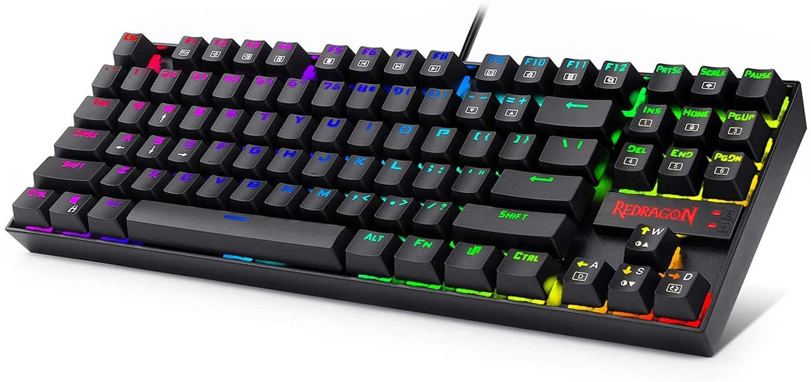
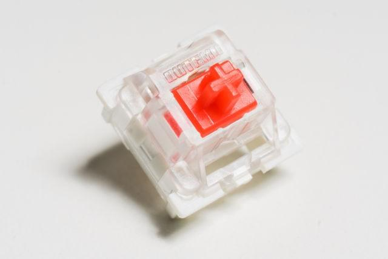
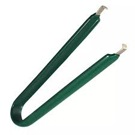
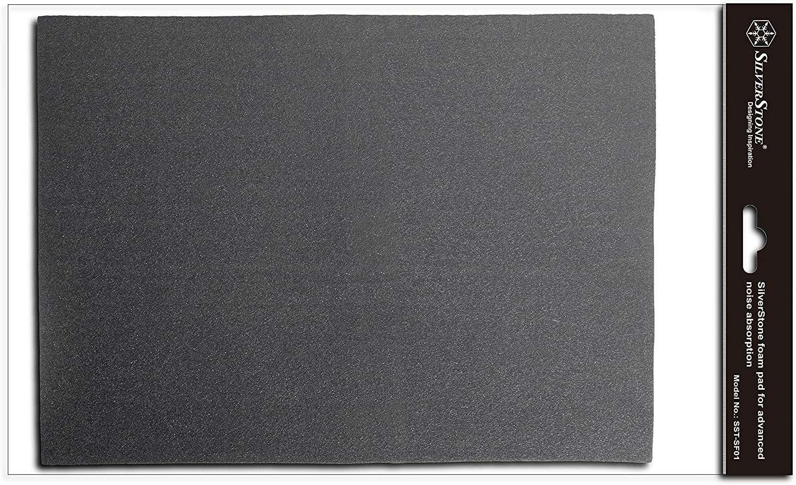
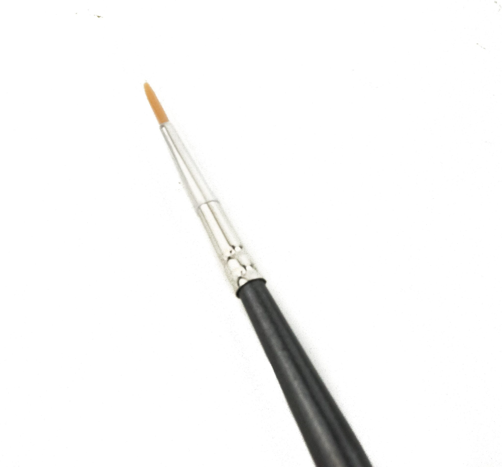
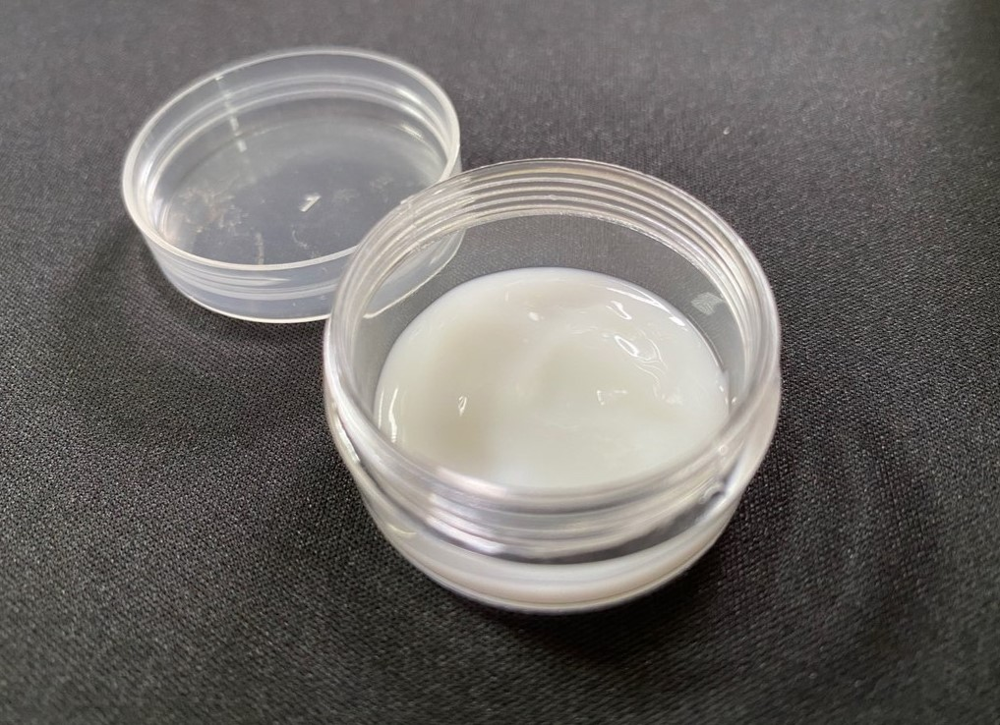
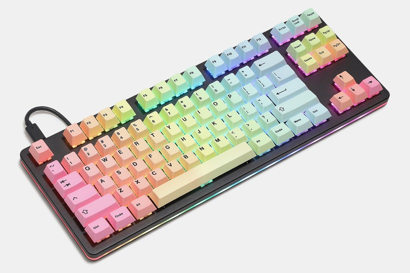

My Keyboard
My keyboard is a modified TKL branded keyboard. It is a Redragon K552 RGB Gaming Keyboard which I bought on Amazon in April 2019. It features customisable rgb colors and patterns. The switches were a cheap blue clicky switch. My thoughts on the stock keyboard were fairly ok. As a person who had never owned a mechanical keyboard before, it's a very good entry-level keyboard for its cheap price and functionality. As lockdown started, I stumbled across custom mechanical keyboards. I got very interested in the various options available. After a year of using clicky switches, I started to dislike them. As a gamer, double-tapping was an issue and family members could always hear the switches late at night. As well as that, my aluminium plate created a pinging noise after each keypress. I sought to resolve those issues.
Outemu Red Switch
I opted for this cheap linear switch. Linears are a lot quieter than their clicky counterpart. I did not have a high budget so I found these on Aliexpress. They are the same manufacturer as the stock blue switch.
Switch Key Puller
Fortunately my keyboard was hot-swappable however the switches were still plate mounted. At first I thought a flathead screwdriver would be sufficient but i was very mistaken. The switches despite not being soldered, are still very tight inside their socket. I decided then, to buy a switch puller which made the process a lot easier.
Noise Absorber Silent Foam
From my research, I found that some people placed foam inside their keyboard between the case and pcb as well as the pcb and plate. This acts as a sound dampener absorbing any vibrations and reverb. On the down side, I had to cut the foam down to shape which took a long time to get right.
Krytox 205 G0
There was a lot of different lubes to choose from, all with their various properties but one which was recommended the most for linears was Krytox 205 G0 lube. It's very consistent and doesn't separate over a long period of time. I also ordered a thin paint brush for the application.
 Artifact Bloom Series Keycap Set: Rainbow
Lastly, after modifying the kb, I was fortunate enough to come into a bit of money and so I decided to splurge on a keycap set. They are generally quite expensive and this was the cheapest one I could find that I liked the look of. It's PBT and is made in a cherry profile.
End Result

This is the final look of my keyboard. It took many hours of switch lubing and foam trimming but it turned out really good. It certainly isn't perfect given it is modified not custom so it's not my "endgame" kb so to speak. The switches are slightly scratchy and there are definitely better sounding keyboards out there however for now, it's more than enough.